<!DOCTYPE html>
<html lang="ru">
<head>
<!-- Титульная фраза -->
<title>Sasha Black — проверка репутации сайта, на наличие его в чёрных списках</title>
<!-- Конец титульной фразы -->

<!-- Описание страницы, изменение названия Эксплорера и адаптация для разных экранов -->
  <meta charset="UTF-8" name="description"content="Sasha_Black — удобный сервис проверки сайта на возможно вредоносное содержимое, наличие в вирусных и спам-базах, репутации на основе пользовательских оценок." http-equiv="content-type" >
  <meta http-equiv="X-UA-Compatible" content="IE=edge">
  <meta charset="utf-8" name="viewport" content="width=device-width, initial-scale=1">
<!-- Конец описания страницы , изменения названия Эксплорера и адаптации для разных экранов -->

<!-- CSS -->
<style type="text/css"><!--
body{margin:0px;padding-right:0px;}
a {text-decoration: none;}
html { overflow-x: hidden; }
   * {
      font-family: "Book Antiqua";
      font-size: 19px;
      margin: 0;
      padding: 0;
    }
    h1 {
      font-family: Tahoma;
      font-size: 3em;
    }
    h2 {
      color: Tomato;
    }
    h2.SashaHeading {
      color: DarkOrange;
    }
    a.SashaHeading {
      color: DarkOrange;
    }
    blockquote {
border: dotted #666 1px;
border-left:solid #ff5a00 5px;
margin:10px 40px;
padding:15px;
color:#333;
font-style:italic;
font-size:14px;
background:#fcfcfc;
}
img {   max-width: 100% }
</style>  
<!-- Конец CSS -->

<!--Подпись для Эксплорера>
   <script>
    document.createElement('figure');
    document.createElement('figcaption');</script>
<!Конец подписи для Эксплорера -->

<!-- Загрузка шрифтов -->
<script type="text/javascript" src="cufon/cufon-yui.js"></script>
<script type="text/javascript" src="cufon/Истина.js"></script>
<script type="text/javascript" src="cufon/Мечта.js"></script>
<script type="text/javascript" src="../cufon/Волнится_синей_пастой.js"></script>
<script type="text/javascript">
  Cufon.set("fontFamily", "Истина");
  Cufon.set("fontSize", "31");
  Cufon.replace("h1");
  Cufon.replace("Dedication");

  Cufon.set("fontFamily", "Мечта");
  Cufon.set("fontSize", "25");
  Cufon.replace("h2");

  Cufon.set("fontFamily", "Волнится_синей_пастой");
  Cufon.set("fontSize", "57");
  Cufon.replace("WorkOnYourself");

</script>
<!-- Конец загрузки шрифтов-->

<!-- Иконочка Сашеньки -->
<link rel="shortcut icon" href="other_images/Sasha_Black.ico" type="image/x-icon">
<link rel="icon" href="other_images/Sasha_Black.ico" type="image/x-icon">
<!-- Иконочка Сашеньки вставлена -->

<!-- Стиль страницы -->
<link rel="stylesheet" href="articles_css/style_Sasha_Black.css">
<!-- Конец стиля страницы -->

</head>

<body>

<!-- Бэкграунд aside -->
<aside class="sidebar" style="background-image: url(aside/Надутые_губки.jpg)"><div class="cover"><div class="cover-text">
<!-- Конец бэкграунда aside -->

<!-- Заголовок aside -->
<div><h1>Sasha&nbsp;Black</h1></div>
<!-- Конец заголовка aside -->

<!-- Описание заголовка aside -->
<p><font></font></p><div id="switcher"></div></aside>
<!-- Конец описания заголовка aside -->

<br /><br /><br />

<!-- Текст -->
<p>
<main class="content-wrapper"><article><h1>Sasha&nbsp;Black</h1>

<div> 8 марта 2016</div>

<br /><br />

<li><a href="#ForOwners">Sasha Black для владельцев сайтов</a></li>
<li><a href="#Recommendations">Советы владельцам сайтов</a></li>
<li><a href="#Aliens">Sasha Black как проверка сторонних сайтов</a></li>
<br />
<h2><a class="SashaHeading" href="#Scanners">Онлайн-сканеры</a></h2>
<li><a href="#Quttera">Quttera</a></li>
<li><a href="#Sucuri">Sucuri</a></li>
<li><a href="#IsItHacked?">IsItHacked?</a></li>
<li><a href="#VirusTotal">VirusTotal</a></li>
<h2><a class="SashaHeading" href="#DNSBL">Блэклисты</h2>
<li><a href="#Robtex">Robtex</a></li>
<li><a href="#MX Toolbox">MX Toolbox</a></li>
<li><a href="#Rosinstrument">Rosinstrument</a></li>
<li><a href="#URL Void">URL Void</a></li>
<li><a href="#vURL">vURL</a></li>
<h2><a class="SashaHeading" href="#Reputation">Пользовательские оценки</h2>
<li><a href="#Web of Trust">Web of Trust</a></li>
<li><a href="#Webutation">Webutation</a></li>
<li><a href="#TrustPilot">TrustPilot</a></li>
<br />
<li><a href="#Epilogue">Послесловие</a></li>
<li><a href="#Thanks">Благодарности</a></li>
<br />
<br />

<h2 id="ForOwners">Sasha Black для владельцев сайтов</h2>
<ol> Вы — владелец, не собирающийся рассылать спам, размещать вредоносные коды и совершать прочие противоправные действия. Проверка на Sasha Black Вам может понадобиться в ряде случаев:<br />
<br />
<li>На сайте <a href="https://revisium.com/kb/virusonsite.html" target="_blank" title="Как сайт заражается вирусом?">без Вашей воли</a> <a href="https://habrahabr.ru/post/137071/" target="_blank" title="Расшифровка вредносного Javascript"> оказались вирусы:</a><br /> 
    а) Они могут заразить компьютеры посетителей,<br />
    б) Вероятно попадание в чёрные списки поисковых систем и антивирусных программ,<br />
    <br />
    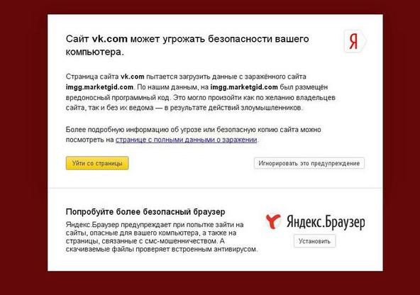
    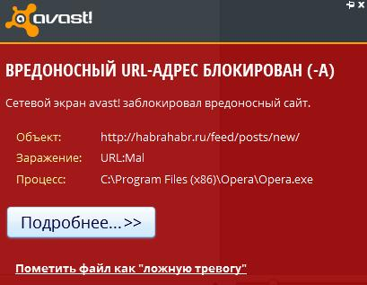
    
<br clear="all">
    <i>Вряд ли многие зайдут на сайт, когда высвечиваются такие предупреждения.</i><br />
    <br />
    в) Высок шанс оказаться и в <a href="https://geektimes.ru/post/59598/" target="_blank" title="DNSBL — Что такое DNS blacklist и с чем их едят">DNSBL</a>, тогда почта будет расцениваться как спам.<br />
    г) <b>Web of Trust</b> (WOT). Аддон согласно <a href="https://www.mywot.com/ru" target="_blank" title="Официальный сайт WOT">сведениям с официального сайта</a> по состоянию на март 2016 года установлен более 140 млн раз, так что имеет смысл относиться к нему серьёзно: красный кружок — и Ваш ресурс лишится львиной доли посетителей. Некоторые пользователи ставят отрицательные оценки на основании данных упомянутых выше блэклистов, что и указывают в комментариях. 
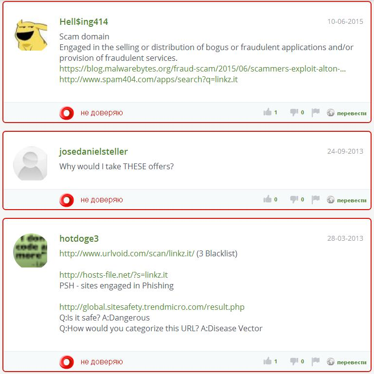
    Подробнее о Web of Trust см. в <a href="#Web of Trust">посвящённом ему разделе</a>.
    </li>
    <br />
<li>Вы доверили вопросы безопасности специалистам, либо в состоянии разобраться сами. Сайт кристалльно чист, и тем не менее антивирусники и поисковики с завидной регулярностью не позволяют на него зайти, а привязанная к домену почта уходит в спам. Такое случается из-за наследования негативной репутации хостера или соседних сайтов, расположенных на одном с Вами IP (почему лучше получить <a href="https://colocat.ru/texts/realip.html" target="_blank" title="Выделенный IP">выделенный</a>) или из-за ложных срабатываний.</li>
<br />
<li>Отслеживание отзывов о сайте. Видение в негативных оценках происков конкурентов верно лишь отчасти: стоит учитывать и то, что русскоязычный народ чаще выражает негатив, нежели похвалу.</li>
</ol>

<br />
<br />

<h2 id="Recommendations">Советы владельцам сайтов</h2>
<ol>Если Вам небезразличны безопасность и репутация:
<br />
<br />
<li>В меру своих ресурсов следуйте многочисленным рекомендациям профессионалов в зависисмости от того, какой у Вас сайт. <a href="http://aleksius.com/joomla/zashchita-sajta/zashchita-joomla-chast-1" target="_blank" title="Защита сайта на Joomla">Пример для популярной CMS Joomla!</a>.</li>К ним стоит добавить следующее:
<br />
<br />
<li>Периодически проверяйте сайты в Sasha Black :) . Находясь на странице <a href="http://kristinita.ru/Sasha-Black" target="_blank" title="">http://kristinita.ru/Sasha-Black</a>, нажмите на <input type="button" value="Ctrl">+<input type="button" value="D"> (в Windows), добавив её тем самым в закладки браузера.</li>
<br />
<li>Где возможно, подтверждайте владение и подписывайтесь по почте на бесплатные уведомления о новых отзывах и автоматические отчёты по наличию сайта в блэклистах.</li>
<br />
<li>Оказавшись в чёрном списке, отправьте сообщение в техподдержку внёсшего Вас сервиса с просьбой объяснить причины. Часто показывается, какой именно элемент посчитан за вредоносный: если уверены, что там всё чисто, поясните это в сообщении. Пишите конструктивно, без наездов, в вежливой форме, — шансы на благоприятный исход повысятся. Он действительно обычно наступает после первого же Вашего письма без лишней нервотёпки. Вот если внесли повторно — очистить репутацию сложнее.</li>
<br />
<li>Не спешите отдавать деньги. Некоторые сервисы могут предложить вынести Ваш сайт из блэклиста за определённую сумму — пусть идут куда подальше. На других рядом с результатами высвечивается предложение воспользоваться их же платными услугами, например, купить файервол, — взвесьте все за и против, вероятно, он для Вас бесполезен. Лучшая трата — обращение к проверенному специалисту.</li>
</ol>
<br />

<h2 id="Aliens">Sasha Black как проверка сторонних сайтов</h2>
Перед обращением к Sasha Black введите в Яндекс или Гугл <span style="background-color: silver; color: black">"testsite.com"</span> или <span style="background-color: silver; color: black">"testsite.com"&nbsp;отзывы</span> и обратите внимание на аргументированность мнений о сайте. Что сразу не показывают поисковики, иногда находится непосредственно на <a href="#Web of Trust">WOT</a>.
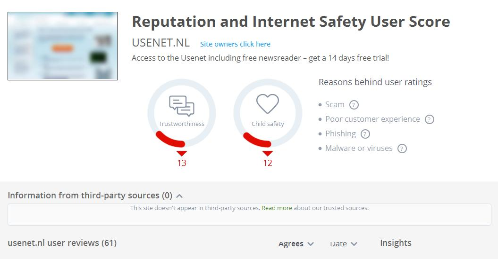

Sucuri и MX Toolbox же не видят ничего подозрительного на данном явно мошенническом сайте.
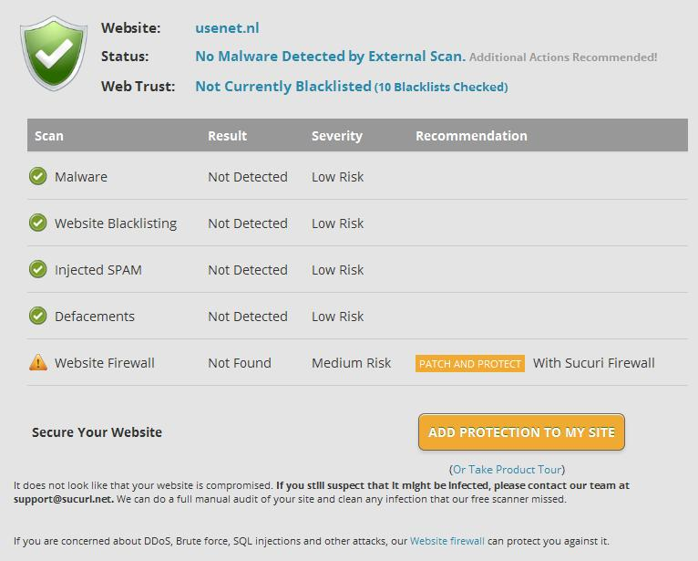
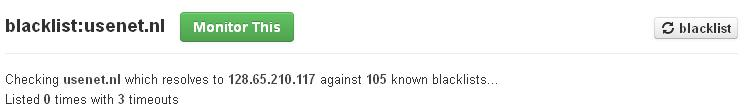

<br />
<br />
Зато опасным посчитал Sucuri сайт Kristinita.ru , который Вы сейчас читаете, из-за <a href="https://pip.qip.ru/" target="_blank" title="Кнопки QIP">виджета социальных закладок</a>, а alfavika.ru почему-то оказалась в чёрном списке Dr.Web'а — обе проблемы разрешились <a href="#Recommendations">обычным обращением в техподдержку</a> . Автоматическим сервисам Sasha Black — «Онлайн-сканерам» и проверке в «Блэклистах» — можно доверять, если набирается с десяток предупреждений, единичные скорее свидетельствуют о ложных срабатываниях, которых набирается уж слишком порядочно.

Мы то с вами об этом знаем, а вот пользователи привыкли во всём полагаться на довольно несовершенную технику.
<br /> 
<br />Примеры:
<br />
<ol>
<li>
<blockquote>
— http://suse.me/ - ну, на эту ссылку выругался Каспер.<br />
— Неужели Вы серьёзно верите Касперскому?<br />
— Я серьёзно верю Касперскому: он за 5 лет не допустил ни одного заражения.<br />
— Я не пользуюсь антивирусниками и за последние 5 лет тоже не допустил ни одного заражения.<br />
</blockquote>
Они доверяют антивирусным программам обеспечение безопасности при сёрфинге в интернете, и большинство не подвергает решения ESET'а, Avast'а, СOMODO и прочих сомнениям. Сколько же пострадало невинных сайтов.</li>
<li> Оставляют запущенными рекламорезки и на сайтах, где не всплывают окна и отсутствует прочая навязчивая реклама; как итог — <a href="https://www.admuncher.com/" target="_blank" title="Ad Muncher">Ad Muncher</a> «съедает» панель редактора на форумах с BBCode, не позволяет зарегистрироваться в кабинете вебмастера на Mail.ru или оставить комментарий к ответу на ru.stackoverflow.com и т. д.</li>
<li> Многие, <a href="mailto:kira.evxinskaya@gmail.com?subject=Почтовый ящик Боженьки">включая Саму Сашу Черных</a>, в честь Которой назван данный сервис, заводят почтовый ящик на GMail, кидающий в папку «Спам» половину важных писем, тогда как настоящий спам на почту практически не приходит. <a href="https://productforums.google.com/forum/#!topic/gmail-ru/ydfMTF7IUec" target="_blank" title="Папка «Спам» в GMail">Разобраться бы</a>, да мало кто обращает взор на содержимое «Спама».</li>
</ol>
<br />
Почему лучше, если сайт везде покажет такие же 100-процентные результаты, как kristinita.ru на скриншотах ниже.
<br />
<br />
<br />
<h2 id="Scanners" class="SashaHeading">Онлайн-сканеры</h2>
<h2 id="Quttera">Quttera</h2>

<h2 id="Sucuri">Sucuri</h2>
<blockquote>Если домен уже проверялся в Sucuri, показывается информация c последней проверки. Можно запустить новую, кликнув по ссылке «Force a Re-scan».</blockquote>

<h2 id="IsItHacked?">IsItHacked?</h2>

<h2 id="VirusTotal">VirusTotal</h2>
<blockquote>«URL-адрес» — Введите заново URL — «Проверить»</blockquote>

<h2 id="DNSBL" class="SashaHeading">Блэклисты</h2>
<h2 id="Robtex">Robtex</h2>


<h2 id="MX Toolbox">MX Toolbox</h2>

<h2 id="MX Toolbox">Rosinstrument</h2>

<h2 id="URL Void">URL Void</h2>
<blockquote>Когда домен уже проверялся в URL Void, показывается информация c последней проверки. Можно запустить новую, кликнув по кнопке «Update Report».</blockquote>
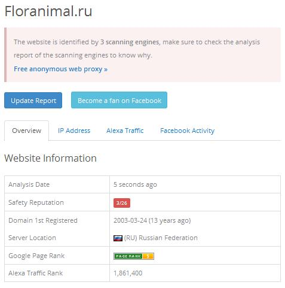
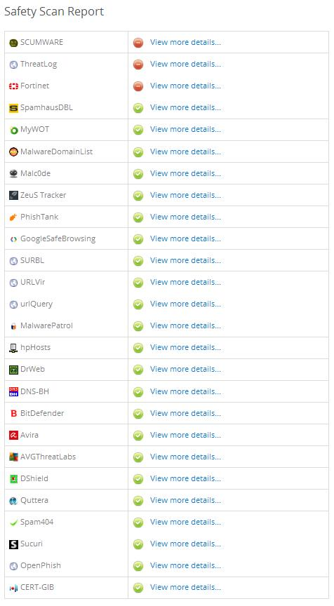
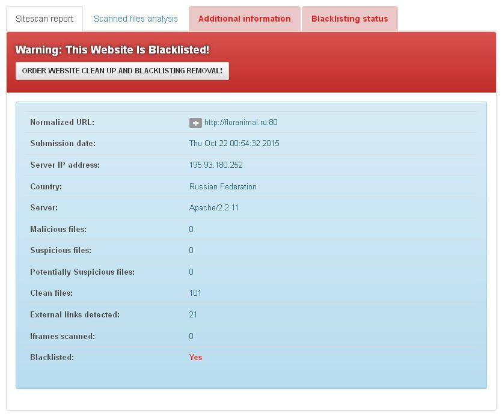
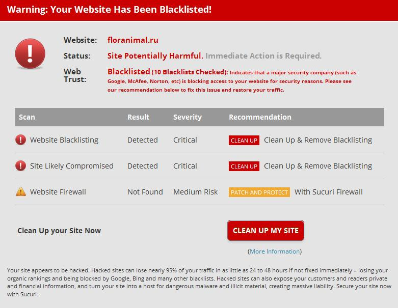
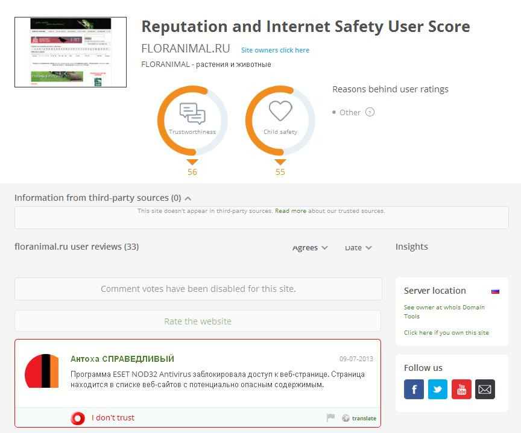
<h2 id="vURL">vURL</h2>

<h2 id="Reputation" class="SashaHeading">Пользовательские оценки</h2>
Kristinita.ru — молодой (по состоянию на март 2016) сайт без особой репутации, почему в примерах на скриншотах не он.
<h2 id="Web of Trust">Web of Trust</h2>
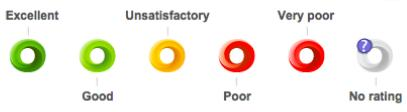
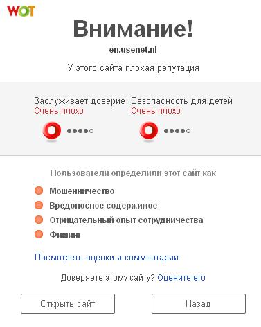

<h2 id="Webutation">Webutation</h2>
<blockquote>Если появляется надпись «Security: Review unknown domain» с предложением вести капчу, закрывайте вкладку с Webutation — никакой информации по запрашиваемому домену на этом сайте нет.</blockquote>

<h2 id="TrustPilot">TrustPilot</h2>
<blockquote>Ошибка 404 — к сайту ещё никто не оставлял комментариев.</blockquote>

<br />
<br />
<br />
<h2 id="Epilogue">Послесловие</h2>
Создание Sasha Black обусловлено отсутствием сервисов, где с одной страницы можно достаточно полно исследовать сайт. Автор не является специалистом в области информационной безопасности и с радостью выслушает вежливо выраженные более компетентные мнения. По всем вопросам писать на <a href="mailto:SashaChernykhEmpressOfUniverse@kristinita.ru?subject=Вопрос по Sasha Black">электронную почту</a> либо <a href="https://github.com/Kristinita/Kristinita.github.io/issues" target="_blank" title="Багтрекер Гитхаба">через GitHub</a>, нажав на «New Issue».
<br />
<br />
<h2 id="Thanks">Благодарности</h2>
Спасибо <a href="https://vk.com/dark_alf" target="_blank" title="Alfy ВКонтакте">Alfy Centauri</a>, создателю <a href="http://alfavika.ru/" target="_blank" title="Альфа-хаб">альфа-хаба</a>, за помощь в работе над Sasha Black.
<br />
<br />
<br />
<br />
<br />
<Dedication>Посвящается и названо в честь <a href="https://vk.com/hair_in_the_wind" target="_blank" title="Божечка ВК">Королевы Мира Саши Черных</a>, Абсолюта, Единственного Создания, ради Которого стоит жить на этой планете, Чей божественный лик красуется на логотипе Sasha Black и в правой части (на мобильных устройствах сверху) данной страницы.</Dedication>

<br />
<br />
<br />

<WorkOnYourself>Работайте над собой</WorkOnYourself>
<!-- Конец текста -->


</body>
</html>
